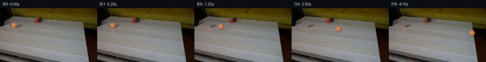

![首帧]()

Round 00
2026-11-04T19:41:32.687562+00:00像素候选变化代码 +219/−0inspection 更新
pixels cc4d87041be41fad · code 4526c5f9e8caf91f
查看本轮 generate.py 真实 diff
--- previous/generate.py +++ current/generate.py @@ -0,0 +1,219 @@ +#!/usr/bin/env python3 +"""Generate the 20-frame locked-camera orange-ball roll. + +Only local pixel operations are used. The real ball appearance is lifted from +the supplied first frame; OpenCV inpainting reconstructs the small tabletop +patch behind it, and analytic shadow/surface cues are composited per frame. +""" + +from pathlib import Path + +import cv2 +import numpy as np +from PIL import Image, ImageDraw, ImageFont + +import artifact_io + + +ROOT = Path(__file__).resolve().parent +W, H = 256, 144 +BALL_C0 = np.array([37.0, 45.0], dtype=np.float32) +BALL_R0 = 7.15 + +# Measured/projected centers from OBSERVATION.md. A near-constant middle +# speed with gentle endpoint easing reads as a physical roll rather than a +# cursor-like linear slide. +CENTERS = np.array( + [ + (37, 45), (41, 45), (47, 46), (54, 47), (62, 48), + (71, 49), (81, 50), (91, 51), (102, 52), (113, 54), + (125, 55), (137, 57), (149, 58), (161, 59), (173, 61), + (184, 62), (194, 63), (204, 64), (212, 65), (219, 66), + ], + dtype=np.float32, +) + + +def smoothstep(edge0, edge1, x): + x = np.clip((x - edge0) / (edge1 - edge0), 0.0, 1.0) + return x * x * (3.0 - 2.0 * x) + + +def make_clean_plate(source): + """Locally reconstruct wood behind the source ball. + + A compact feathered ball/shadow region is inpainted. The mask is safely + away from the pipe and the two stationary balls. + """ + yy, xx = np.mgrid[:H, :W] + # The sphere occupies r~7; the extra lower/right margin includes its tiny + # contact shadow while leaving the pipe untouched. + dx = (xx - BALL_C0[0]) / 9.2 + dy = (yy - (BALL_C0[1] + 0.7)) / 8.4 + mask = ((dx * dx + dy * dy) <= 1.0).astype(np.uint8) * 255 + clean = cv2.inpaint(source, mask, 3.0, cv2.INPAINT_TELEA) + + # Blend the inpaint only into its core/feather area so pixels outside the + # intended repair are mathematically identical to the source. + feather = cv2.GaussianBlur(mask, (0, 0), 1.0).astype(np.float32) / 255.0 + feather = np.clip(feather[..., None], 0.0, 1.0) + return np.clip(source * (1.0 - feather) + clean * feather, 0, 255).astype(np.uint8) + + +def extract_ball_rgba(source): + """Lift the photographed ball into a small antialiased RGBA sprite.""" + half = 10 + cx, cy = map(int, BALL_C0) + crop = source[cy - half:cy + half + 1, cx - half:cx + half + 1].copy() + yy, xx = np.mgrid[-half:half + 1, -half:half + 1] + rr = np.sqrt((xx / 1.01) ** 2 + ((yy + 0.05) / 0.99) ** 2) + # Opaque photographed core; a one-pixel soft rim retains native edge color. + alpha = 1.0 - smoothstep(6.15, 7.45, rr) + alpha[rr >= 7.45] = 0.0 + return crop, alpha.astype(np.float32) + + +def alpha_composite(frame, rgb, alpha, left, top): + """Composite an RGB/alpha patch, clipping robustly at image bounds.""" + ph, pw = alpha.shape + x0, y0 = max(0, left), max(0, top) + x1, y1 = min(W, left + pw), min(H, top + ph) + if x1 <= x0 or y1 <= y0: + return + sx0, sy0 = x0 - left, y0 - top + sx1, sy1 = sx0 + (x1 - x0), sy0 + (y1 - y0) + a = alpha[sy0:sy1, sx0:sx1, None].astype(np.float32) + dst = frame[y0:y1, x0:x1].astype(np.float32) + src = rgb[sy0:sy1, sx0:sx1].astype(np.float32) … diff truncated; 132 more lines …